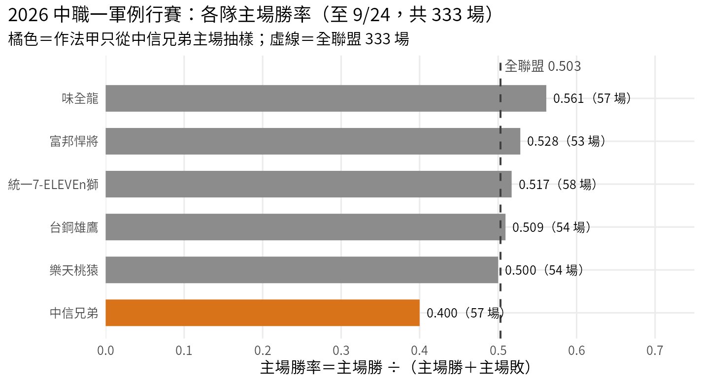
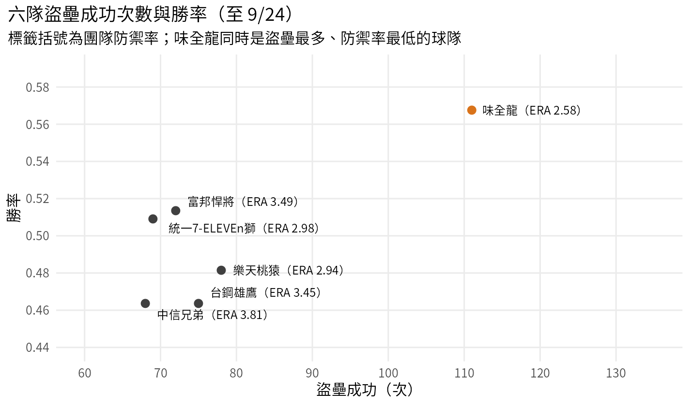
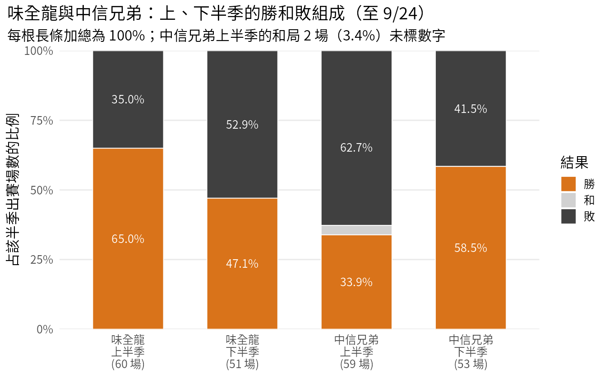
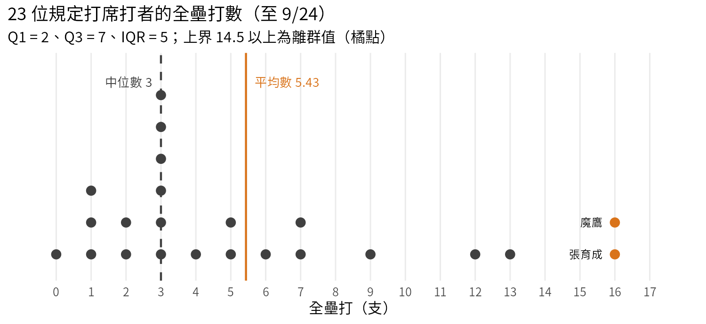

Week 03 作業參考答案
中職 2026 例行賽：抽樣、實驗、類別與數值資料
本頁依作業題目提供的表格整理四題參考答案。計算以題目表格為準；學生若使用不同但合理的表達方式，仍應以統計概念與推理是否正確判斷。
第 1 題｜抽樣：主場勝率

1. 母群體與參數
- 母群體：2026 年中職一軍例行賽截至 9/24 已完成的 333 場比賽。觀察單位：一場比賽（記錄主場球隊的結果）。抽樣底冊：這 333 場比賽的賽程編號清單。作法乙的樣本：從清單中亂數抽出的 42 場。
- 全聯盟主場勝率 = 166 ÷（166 + 164）= 0.503（和局 3 場不列入分母）。題目把母群體限定為這 333 場，官網總表等於普查，所以 0.503 是參數；小明用作法乙的 42 場算出的勝率是統計量，用來估計 0.503。
- 常見錯誤：把「333 場」當樣本、把 0.503 叫統計量；或把觀察單位寫成「球隊」。若學生寫出 333 ÷ 330 以外的分母（例如 166 ÷ 333 = 0.498），只要清楚說明和局處理方式，可給部分分；題目已給勝率定義，應以 0.503 為準。
2. 作圖
| 主場球隊 | 主場勝率 | 主場場數 |
|---|---|---|
| 味全龍 | 32/57 = 0.561 | 57 |
| 富邦悍將 | 28/53 = 0.528 | 53 |
| 統一7-ELEVEn獅 | 30/58 = 0.517 | 58 |
| 台鋼雄鷹 | 27/53 = 0.509 | 54 |
| 樂天桃猿 | 27/54 = 0.500 | 54 |
| 中信兄弟 | 22/55 = 0.400 | 57 |
回答重點：六隊數值正確（台鋼雄鷹、中信兄弟要排除和局）；有 0.503 的水平線（或橫向長條圖的垂直線）；標出主場場數。
3. 判斷偏差
- 作法甲只從中信兄弟主場抽樣，中信兄弟主場勝率 0.400，是六隊最低，甲的估計會偏低（樣本勝率會在 0.400 附近變動，而非 0.503）。
- 問題來自選人方式：抽樣底冊只包含一隊的主場，其他五隊主場沒有機會被抽到，屬於選擇偏差。把 57 場全部記下，得到的是中信兄弟主場勝率 0.400，偏差仍在；增加樣本數只會讓估計更穩定地落在錯誤的數字上。
- 回答重點：方向（偏低）、原因（底冊／選人方式）、增加 n 不能修正。
4. 比較乙與丙
- 丙是分層抽樣（依主場球隊分層，層內隨機抽）。和乙相比，丙保證六隊主場都在樣本中，不會因為亂數碰巧讓某隊主場太多或太少。
- 各層大小 53–58 場，依比例配置應抽 6.7–7.3 場，與每層 7 場差距很小，估計不會明顯偏離；若要更精確，可依各層場數加權或按比例配置。
- 回答重點：正確命名分層抽樣；說出「每層都有代表」；能用各層大小相近說明等量配置的影響小。只寫「丙比較好」而無理由，給 2 分以下。
5. 推論範圍
- 不能直接代表：尚有 27 場（360 − 333）未打，已完成的比賽不是全季的隨機樣本，是依賽程時間先後完成的前段比賽；季末比賽可能有不同條件（例如已被淘汰的球隊調整用人、補賽集中、天候）。可補充：已完成 333/360 = 92.5%，全季數字不太可能差很多，但這是推測，不是資料保證。
- 2027 年是另一個母群體：球員名單、規則、球場條件都可能改變，2026 年的比賽不是從 2027 年抽出的樣本。
- 回答重點：兩個理由各 2 分；指出「已完成比賽不是隨機樣本」1 分。
第 2 題｜實驗：盜壘與勝率

1. 作圖
- 六點整體呈正向：盜壘多的球隊勝率較高，但這個方向幾乎完全由味全龍一點（111 次、0.568）造成。其餘五隊盜壘 68–78 次、勝率 0.464–0.514，看不出正向關係（樂天桃猿盜壘 78 次是這五隊最多，勝率 0.481 在六隊中排第四）。
- 回答重點：軸標與單位、每點標隊名、描述方向、指出遮住味全龍後方向消失或不明顯。
2. 研究類型與混淆
- 觀察研究：盜壘次數由各隊教練與球員依情境自行決定，沒有人隨機分派「多盜壘」或「少盜壘」。
- 表中線索：味全龍團隊防禦率 2.58，是六隊最低，投手群失分最少；勝率高可能主要來自投手，而非盜壘。（反之，味全龍上壘率 0.309 是六隊倒數第二，盜壘多不是因為上壘機會多。）
- 表外可能的混淆因素（須能同時影響盜壘與勝率）：陣容的腳程與年齡組成（年輕、速度快的球員既常盜壘，也可能守備範圍較大而少失分）、總教練的戰術風格與整體執行力、比賽情境（投手強的球隊常打低比分的接戰，較常用盜壘搶一分）。
- 回答重點：「觀察研究」與理由 2 分；表中變項 1.5 分；表外因素須說明與兩者的關聯 1.5 分。只寫「還有其他因素」不給分。
3. 設計實驗
參考設計（學生設計合理即可）：
- 實驗單位：二軍的一場比賽。
- 處置組：積極盜壘戰術（事先寫定的條件下一律發動，例如一壘有人、兩出局以前、比分差 3 分以內）。對照組：一般戰術（由教練依平常習慣判斷）。
- 隨機分派：賽前以亂數或抽籤決定每場用哪一種戰術，例如 40 場各半；教練不能依對手或當天狀況自行挑選。
- 反應變項：本隊每場得分（延長賽或提前結束的比賽可改用每 9 局得分）。另記錄盜壘嘗試次數，確認處置確實執行。
- 區集：依對手分區集，在每個對手的系列賽內各半隨機分派，因為對手捕手阻殺能力與投手不同，會影響盜壘成功率與得分；也可依主客場或對方先發投手左右投分區集。
- 回答重點：五個元素（單位、兩組、隨機方式、反應變項、區集及理由）各 1 分。把處置寫成「挑腳程快的球員去跑」屬於選人而非分派，扣分。
4. 重複與盲法
- 戰術以「場」為單位分派，4 場只有 4 個實驗單位（每組 2 場）。同一場內的 30 次嘗試共享同一個對手投捕、天候、比分情境，彼此不獨立；把它們當 30 筆獨立資料屬於偽重複（pseudoreplication），會高估證據量。
- 真正的重複：增加被隨機分派的比賽場數，並涵蓋不同對手與球場。
- 盲法：打者、跑者、教練與對手必然知道（或看得出）當場的戰術，無法盲化；可以盲化的是整理得分資料與分析的人（以代碼標示組別），減少分析者的期待影響判讀。
- 回答重點：指出分派單位是場 2 分；解釋為何 30 次不獨立 1 分；真正的重複 1 分；盲法的可行與不可行各 0.5 分。
5. 推論範圍
- 隨機分派：若分派確實隨機、場數足夠，兩組的平均得分差異可以歸因於戰術，但只適用於這支二軍在這段期間的比賽。
- 隨機抽樣：這支二軍與它的比賽不是從一軍各隊隨機抽出；一軍的投手、捕手與比賽節奏不同，結果不能直接推廣到一軍各隊，需要其他證據。
- 回答重點：兩個角度各 2.5 分；把「因果」與「推廣」混為一談扣分。
第 3 題｜類別變項：上下半季

1. 變項類型
- 觀察單位：一支球隊在一場比賽中的結果。
- 比賽結果（勝／和／敗）：次序類別，勝優於和、和優於敗，但類別間沒有固定的數值差距。學生若主張名目並說明「只當作三種結果比較組成」，可給 1 分以下的部分分；本題期待次序。
- 球隊：名目類別。半季：有時間先後，可視為次序；寫名目並說明「只用來分組」也可接受。
- 回答重點：三個變項判斷與理由；指出三者都不是數值變項。
2. 條件比例
| 球隊與半季 | 出賽 | 勝 % | 和 % | 敗 % | 勝率 |
|---|---|---|---|---|---|
| 味全龍 上半季 | 60 | 65.0 | 0.0 | 35.0 | 39/60 = 0.650 |
| 味全龍 下半季 | 51 | 47.1 | 0.0 | 52.9 | 24/51 = 0.471 |
| 中信兄弟 上半季 | 59 | 33.9 | 3.4 | 62.7 | 20/57 = 0.351 |
| 中信兄弟 下半季 | 53 | 58.5 | 0.0 | 41.5 | 31/53 = 0.585 |
- 百分比的分母是出賽場數（含和局）；勝率的分母是勝＋敗（不含和局）。中信兄弟上半季有 2 場和局，所以 20/59 = 33.9% 與 20/57 = 0.351 不同；下半季沒有和局，兩個分母相同，數字一致。
3. 作圖
- 四根標準化堆疊長條，每根標出出賽場數。兩隊方向相反：味全龍勝場比例由 65.0% 降到 47.1%（−17.9 個百分點）；中信兄弟由 33.9% 升到 58.5%（+24.6 個百分點）。
- 回答重點：每根長條加總 100%、三種結果都在、圖例、場數標示；中信兄弟上半季的和局不能省略。
4. 判斷說法
- 次數受出賽場數影響：上半季 59 場、下半季到 9/24 只有 53 場，下半季還有 7 場未打，「31 − 20 = 11 勝」同時混入場數差異，且最終數字還會改變。
- 應比較比例：勝場占出賽比例 33.9% → 58.5%，或勝率 0.351 → 0.585（+0.234）。下半季尚未結束，這個比較是到 9/24 為止的暫時結果。
- 可加分但不要求：兩個半季的對手、傷兵與主客場場數不同，比例的變化也不能直接說是「球隊變強」的單一原因。
5. 勝差與全年勝率
- 勝差 =〔(63 − 51) + (59 − 48)〕÷ 2 = (12 + 11) ÷ 2 = 11.5，與官網相符。
- 兩個半季勝率直接平均：(0.351 + 0.585) ÷ 2 = 0.468（用未四捨五入的 20/57 與 31/53 計算得 0.4679）。全年勝率 51 ÷ 110 = 0.464。
- 不同的原因：全年勝率是以各半季已分勝負場數（57 與 53）加權的平均，(57 × 0.351 + 53 × 0.585) ÷ 110 = 0.464；直接平均把兩個半季當成同樣重，忽略分母不同。這與 Week 03 Part 3「12 區差距的直接平均與加權平均」是同一件事。
- 回答重點：勝差算式 2 分；兩個數值 1.5 分；「加權／分母不同」的解釋 1.5 分。
第 4 題｜數值變項：全壘打

排序後的 23 個值：0, 1, 1, 1, 2, 2, 3, 3, 3, 3, 3, 3, 4, 5, 5, 6, 7, 7, 9, 12, 13, 16, 16（合計 125）。
1. 點圖
- 大多數打者集中在 1 到 7 支，3 支最多（6 人）；右側有 9、12、13、16、16 形成較長的尾巴，屬右偏分布。
- 回答重點：23 個點、重複值堆疊、橫軸等距（含 8、10、11、14、15 等沒有點的刻度）、描述集中位置與右尾。
2. 中心
- 平均數 = 125 ÷ 23 = 5.43 支；中位數 = 第 12 個值 = 3 支。
- 描述典型打者應選中位數：右尾的少數長打者把平均數拉高，23 人中有 15 人的全壘打數低於平均數。
- 回答重點：兩個計算各 1.5 分；選擇與連結分布形狀的理由 2 分。
3. 盒形圖規則
- IQR = 7 − 2 = 5；下界 2 − 7.5 = −5.5，上界 7 + 7.5 = 14.5。高於 14.5 的是魔鷹 16、張育成 16；12（朱育賢）與 13（范國宸）不是離群值。
- 離群值只表示遠離中間一半的資料，不代表錯誤；這兩位是聯盟全壘打並列最多的打者（官網單項排行榜同為 16 支）。
- 刪除前應查核：與官網或逐場成績核對數字、確認截止日期一致、是否為輸入錯誤或同名球員、欄位是否把「全壘打」與「長打」混用。確認無誤就應保留並在報告中說明。
- 回答重點：IQR 與界限 2 分；正確找出兩人 1 分；「離群≠錯誤」與查核項目 2 分。
4. 分母
- 魔鷹 16 ÷ 452 × 100 = 3.54 支／100 打席；張育成 16 ÷ 399 × 100 = 4.01 支／100 打席。
- 全壘打次數會隨打席機會增加；張育成用較少的打席打出相同的全壘打數，按每個打席計算的長打率較高。比較不同打者時，應以機會數為分母。
- 可延伸：范國宸 13/409 = 3.18；朱育賢 12/420 = 2.86。
5. 推論範圍
- 若納入所有上場過的打者，會加入許多打席很少、全壘打多為 0 或 1 的替補，平均數與中位數都會下降；中位數很可能落到 0 或 1。
- 這 23 人是依打席門檻挑出的主力打者：能上場這麼多次，本身就和打擊表現有關，不是中職打者的隨機樣本。資料也只到 9/24，球季尚未結束。因此 5.43 只描述「這 23 位達規定打席的打者到 9/24 為止」的平均，不能說成「中職打者平均每人約 5 支」。
- 回答重點：方向（兩者下降）2 分；「依門檻篩選、非隨機樣本」2 分；提到球季未結束或右偏使平均數不具代表性 1 分。